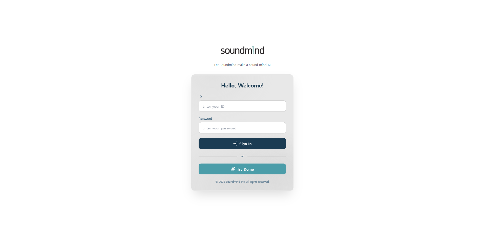
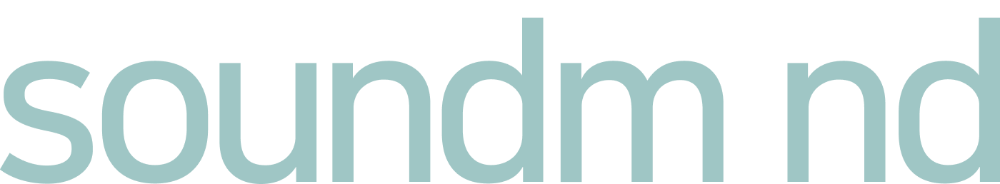

[AI Sales Enablement Platform] SoundMind AI Ecosystem
고객 문서 업로드 → Gemini 2.5-flash + GPT-4o 3-Stage 병렬 분석 → 최적 RAG 전략 자동 추천 → 원클릭 Docker 배포. 배포 리드타임 2주→5분(99%+ 단축). 최대 99개 Pipeline 동시 운용.
Welcome to my portfolio
I'm a Career Switcher to AI from Architectural
Currently Developing RAG & Agent Technologies.
사람의 커뮤니케이션을 AI 시스템으로 옮기는 일을 합니다

건축공학을 전공하고 10년간 건설 현장에서 복합적인 문제를 정의하고 조율해온 경험을 바탕으로,
현재는 AI Research Engineer로서 실무와 연구를 병행하고 있습니다.
SoundMind Inc.에서 B2B 고객의 RAG 도입 장벽을 해소하기 위해 Pipeline 설계부터 고객 운용 환경까지 전 과정을 단독으로 설계·구축했습니다. 단순한 기술 검증에 그치지 않고, 비기술 직군도 직접 운용할 수 있는 UI 기반 PlayGround로 제품화하는 과정을 주도했습니다.
또한 사내 개발자 크루 WIGTN을 리드하며 PSTN 음성 번역 시스템(ACL 2026)과 VLM 기반 문서 파싱(EMNLP 2026) 연구를 병행하고 있습니다. 현장 문제를 정의하는 감각과 AI 엔지니어링 실행력을 함께 갖춘 엔지니어입니다.
실무 경력
AX / AI Research Engineer / Manager
주택사업본부 / Architectural Site Engineer
Head Office / Construction Project Manager
건축사업본부 / Architectural Site Engineer
연구 활동 및 커뮤니티
Research Member / GPU-Accelerated ML Researcher
학력 사항
Bachelor's degree, Architecture Engineering
Associate's degree, Architecture Design
교육 및 수료

Fundamentals of Accelerated Data Science

연구를 위한 AI 활용 과정 (모두의연구소)

프롬프트 엔지니어링 과정 (The Prompt Company: Ph.D 강수진)

Data & AI Alignment Engineer 과정
수상 경력
'H-Silent' 층간차음재 현장 실증 주도, 국토교통부 1등급 인증 획득 기여
「건축현장에서 멘토링 도입을 통한 조직 몰입도 향상에 관한 연구」
자격증
한국데이터산업진흥원
Company Projects & Side Projects

고객 문서 업로드 → Gemini 2.5-flash + GPT-4o 3-Stage 병렬 분석 → 최적 RAG 전략 자동 추천 → 원클릭 Docker 배포. 배포 리드타임 2주→5분(99%+ 단축). 최대 99개 Pipeline 동시 운용.
2B 모델로 15배 큰 30B Teacher와 동등 성능 달성. 한국 공공문서 2,667장 LoRA fine-tuning, OmniDocBench 테이블 파싱 1위.
에코 루프 0/148건, VAD 레이턴시 15~72초→480ms. PSTN 저음역(8kHz) 환경에서 소프트웨어만으로 양방향 실시간 음성 번역을 구현.

Claude Code Skills Plugins으로 2일 만에 완성한 LLM 벤치마킹 도구. AI-Native 개발 방법론으로 연구자/기획자를 위한 오픈소스 프로젝트.

Claude Code용 AI-Native 개발 워크플로우 자동화 플러그인. 7 Commands, 14 Agents, 7 Skills, 4 Hooks — 기획부터 배포까지 Zero Friction. 결과물: WIGVU, WIGTN-SPEAR (OWASP LLM/Web Top 10 커버), TimeLens.
Learning & Side Projects
Google Global 해커톤 출품작. Gemini Live API로 음성·카메라를 실시간 처리하고, Function Calling 4개로 오케스트레이션을 대체한 멀티모달 AI 큐레이터.

4가지 AI 도구로 게임 개발 과정에 자동화 시스템 도입.
자연어로 맞춤형 총기 반동 생성, 3D 맵 모델링, 인게임 AI Agent 구현.

YOLO-Pose 모델로 사용자의 자세를 추출하고, LangChain-based RAG 시스템으로 운동 자세를 진단 후 실시간 피드백을 제공하는 서비스.

입력 된 Keyword를 분석하여 종합 감성을 평가하고, 해당 감성에 맞는 가사 문장들을 생성하여 가사 작사 모델 개발.

Pose Detection AI 기술을 활용한 언리얼 융합 자세 추론 게임. YOLO-Pose의 17개 관절 좌표값과 Cosine 유사도 분석 활용.

Whisper(STT)와 Gemma 2(LLM)를 활용한 경제 유튜브 영상 자동 요약 서비스. QLoRA 파인튜닝으로 VRAM 효율화를 달성했습니다.